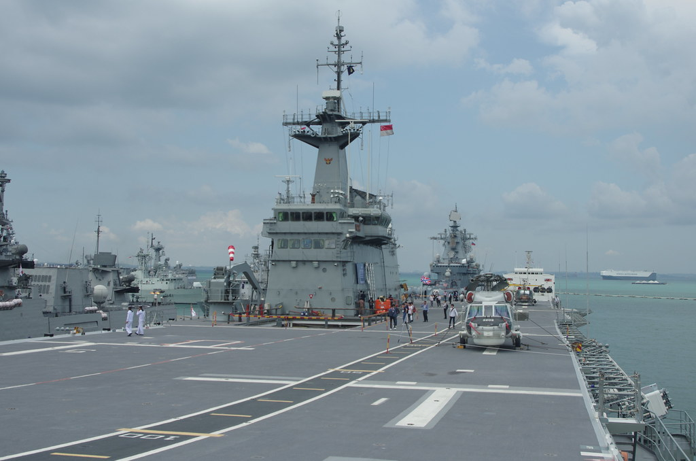
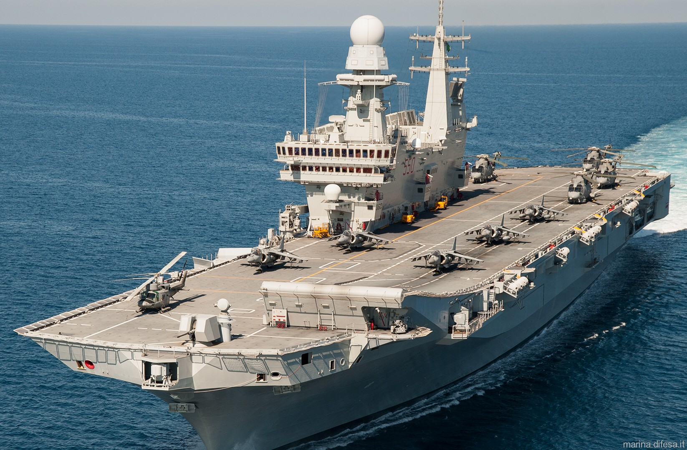
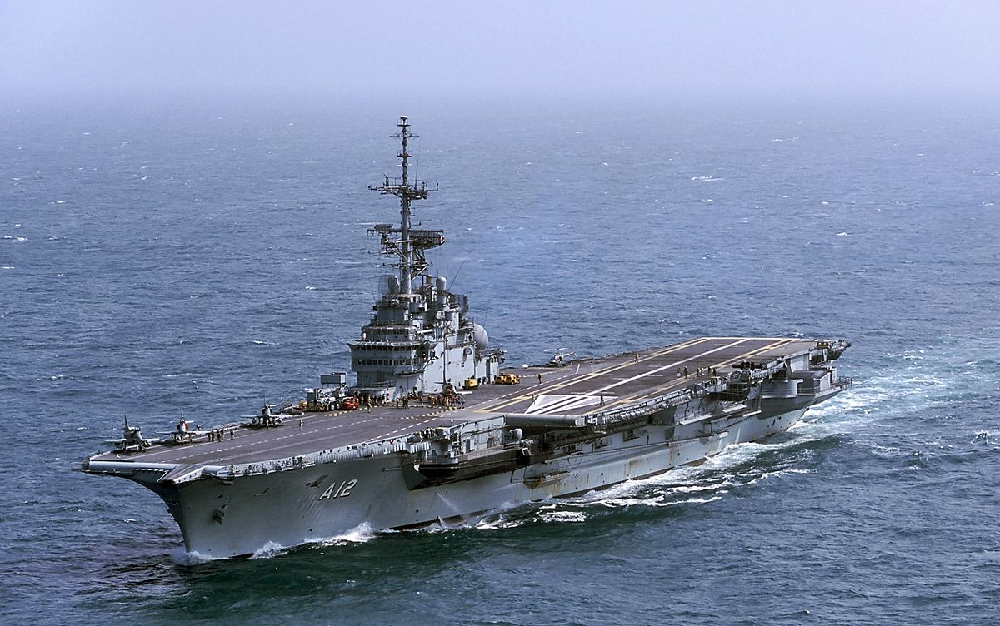
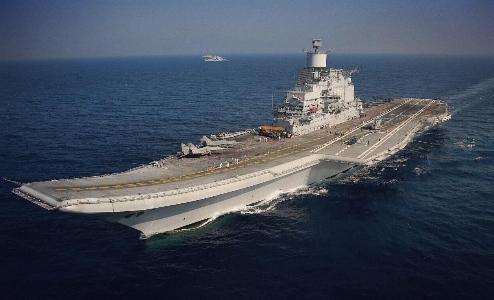
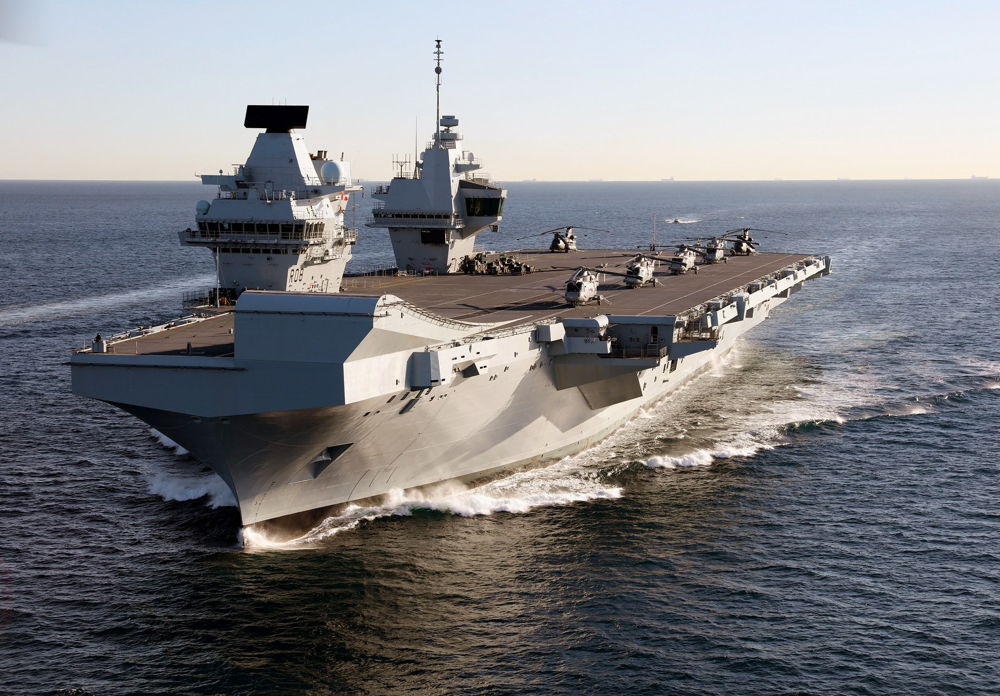
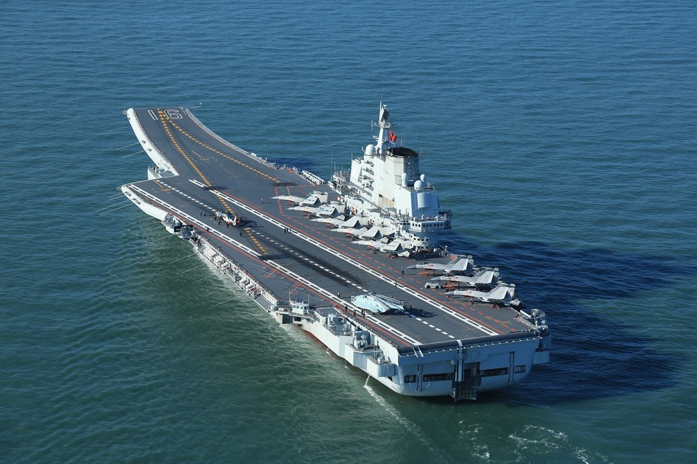
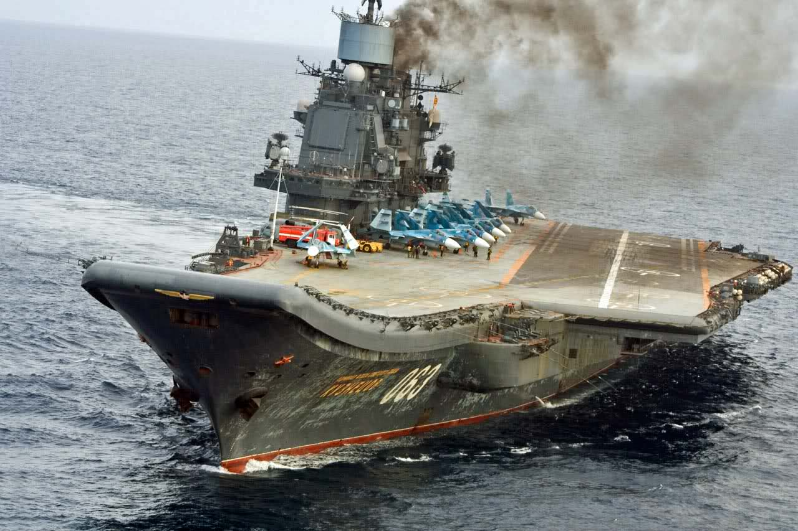
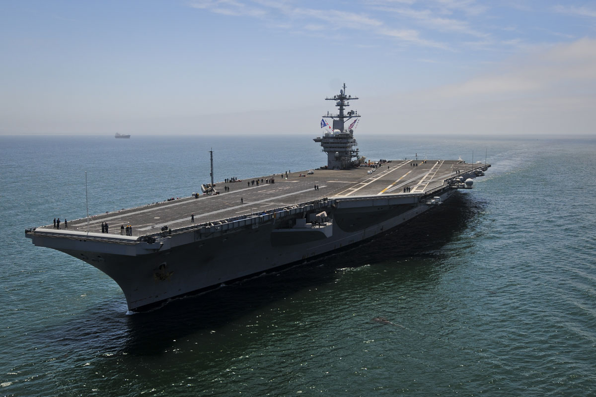

Esse porta avião foi construído na Espanha,
mas está sob o comando da Tailândia, tem 182 metros e pode carregar até 30 aviões.
8º Cavour

Cavour, contruído pela Marinha Italiana, Cavour tem 244 metros e capacidade para
carregar 20 aviões, apesar de ser maior, sua capacidade é bem reduzida comparado a outros modelos ainda
menores que ele.
7º São Paulo

O sétimo lugar é um porta avião Brasileiro, que foi um presente da França para o Brasil,
após negociações de compra de materiais bélicos, o porta aviões foi Hernado da França para o Brasil
tem 265 metros e capacidade para carregar até 40 aviões.
Um detalhe é que São Paulo foi descomissionado esse mês de Fevereiro de 2023, e a Marinha do Brasil o afundou.
6º Vikramaditya

Este é um porta aviões soviético, que atualmente é utilizado pela ìndia, possui 273 metros,
mas apesar do seu tamanho só pode carregar até 30 aviões.
4º Queen Elizabeth

Queen Elizabeth, ou Rainha Elizabete, o primeiro modelo é de 2009, porém em 2022 foi lançado
outro porta aviões com o mesmo tamanho e capacidade, mede 284 metros e pode carregar até 40 aviões.
3º Liaoning & Kuznetsov

Liaoning, da gigante Chinesa, é um porta-aviões da Marinha do Exército de
Libertação Popular da China, que entrou no serviço ativo em 25 de setembro de 2012.
Pertencente a Classe Kuznetsov, ele foi construído pela União Soviética para
servir em sua marinha, porém foi vendido a China quando sua construção ainda não tinha sido
concluída, portanto foi finalizada pela China.

Kuznetsov e Liaoning têm a mesma dimensão, medindo 305 metros e podem
carregar até 40 aeronaves. Apesar da versão da Rússia ter meis poder de fogo
pode-se dizer que ambos estão na mesma categoria em tamanho e capacidade, estão
empatados nesta lista.
2º Nimitz Class

Nimitz Class não diz respeito a apenas 1 porta aviões, os Estados Unidos
construiu um total de 10 porta aviões dessa classe, 7 da linha improved e 3 da linha regular,
que são um pouco menores, a linha toda, como quase todos os modelos dos Estados Unidos, são movidos a Energia Nuclear,
o que ocupa o segundo lugar é justamente os da linha improved, com seus 332 metros
e capacidade para carregar 80 aeronaves, simplesmente o dobro do maior falado anteriormente nessa lista.
1º Gerald R. Ford Class
Em liderança do primeiro lugar não temos apenas o maior porta-aviões do mundo, temos também o maior projeto naval da história do mundo, ele perde por pouco para seu antecessor, literalmente seu antecessor,
nessa lista de top 9 e também em produção de porta-aviões dos Estados Unidos, estamos falando da linha Ford Class, com 335 metros e capacidade
para carregar 85 aeronaves esse cara é o vencedor dessa lista, tem mais 9 cópias do Ford Class esperando para serem produzidas, isso quer dizer que
apesar da China ter passado os Estados Unidos em números, já já a maior potência recupera o ranking novamente.
 Menu
Menu